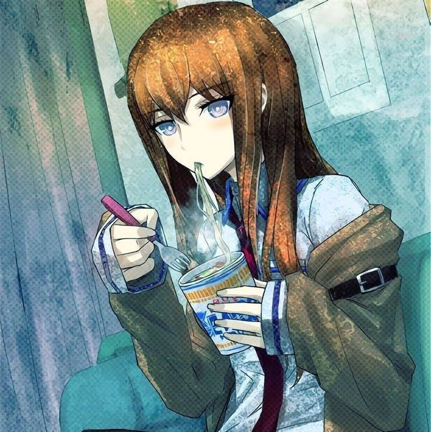

Oh hi there!!, I'm Jon Kryz Nathan G. Francisco
This Personal Website is for my Case Study, a task given by our Professor Ma'am Mariah Nikka Bautista, and it's still a work in progress so there may be a couple of errors here and there, this website is heavily inspired by a game called OMORI.
My goal is to become a video game designer so I can create interactive stories and fun gameplay that inspire others like games inspired me. I’m passionate about combining storytelling with game mechanics and want to develop unique, meaningful experiences for players. To achieve this, I’m learning programming, design tools, and teamwork skills to prepare for working in a professional studio or indie team in the future.